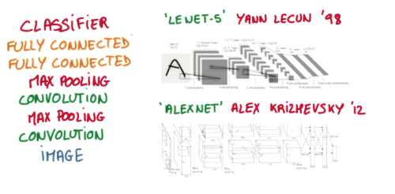

什么是卷积神经网络 CNN (Convolutional Neural Network)
作者: 莫烦 编辑: 莫烦
学习资料:
卷积神经网络是近些年逐步兴起的一种人工神经网络结构, 因为利用卷积神经网络在图像和语音识别方面能够给出更优预测结果, 这一种技术也被广泛的传播可应用. 卷积神经网络最常被应用的方面是计算机的图像识别, 不过因为不断地创新, 它也被应用在视频分析, 自然语言处理, 药物发现, 等等. 近期最火的 Alpha Go, 让计算机看懂围棋, 同样也是有运用到这门技术.
卷积 和 神经网络
我们来具体说说卷积神经网络是如何运作的吧, 举一个识别图片的例子, 我们知道神经网络是由一连串的神经层组成,每一层神经层里面有存在有很多的神经元. 这些神经元就是神经网络识别事物的关键. 每一种神经网络都会有输入输出值, 当输入值是图片的时候, 实际上输入神经网络的并不是那些色彩缤纷的图案,而是一堆堆的数字. 就比如说这个. 当神经网络需要处理这么多输入信息的时候, 也就是卷积神经网络就可以发挥它的优势的时候了. 那什么是卷积神经网络呢?
我们先把卷积神经网络这个词拆开来看. “卷积” 和 “神经网络”. 卷积也就是说神经网络不再是对每个像素的输入信息做处理了,而是图片上每一小块像素区域进行处理, 这种做法加强了图片信息的连续性. 使得神经网络能看到图形, 而非一个点. 这种做法同时也加深了神经网络对图片的理解. 具体来说, 卷积神经网络有一个批量过滤器, 持续不断的在图片上滚动收集图片里的信息,每一次收集的时候都只是收集一小块像素区域, 然后把收集来的信息进行整理, 这时候整理出来的信息有了一些实际上的呈现, 比如这时的神经网络能看到一些边缘的图片信息, 然后在以同样的步骤, 用类似的批量过滤器扫过产生的这些边缘信息, 神经网络从这些边缘信息里面总结出更高层的信息结构,比如说总结的边缘能够画出眼睛,鼻子等等. 再经过一次过滤, 脸部的信息也从这些眼睛鼻子的信息中被总结出来. 最后我们再把这些信息套入几层普通的全连接神经层进行分类, 这样就能得到输入的图片能被分为哪一类的结果了.

我们截取一段 google 介绍卷积神经网络的视频, 具体说说图片是如何被卷积的. 下面是一张猫的图片, 图片有长, 宽, 高 三个参数. 对! 图片是有高度的! 这里的高指的是计算机用于产生颜色使用的信息. 如果是黑白照片的话, 高的单位就只有1, 如果是彩色照片, 就可能有红绿蓝三种颜色的信息, 这时的高度为3. 我们以彩色照片为例子. 过滤器就是影像中不断移动的东西, 他不断在图片收集小批小批的像素块, 收集完所有信息后, 输出的值, 我们可以理解成是一个高度更高,长和宽更小的”图片”. 这个图片里就能包含一些边缘信息. 然后以同样的步骤再进行多次卷积, 将图片的长宽再压缩, 高度再增加, 就有了对输入图片更深的理解. 将压缩,增高的信息嵌套在普通的分类神经层上,我们就能对这种图片进行分类了.
池化(pooling)
研究发现, 在每一次卷积的时候, 神经层可能会无意地丢失一些信息. 这时, 池化 (pooling) 就可以很好地解决这一问题. 也就是说在卷集的时候, 我们不压缩长宽, 尽量地保留更多信息, 压缩的工作就交给池化了,这样的一项附加工作能够很有效的提高准确性. 有了这些技术,我们就可以搭建一个属于我们自己的卷积神经网络啦.
流行的 CNN 结构

比较流行的一种搭建结构是这样, 从下到上的顺序, 首先是输入的图片(image), 经过一层卷积层 (convolution), 然后在用池化(pooling)方式处理卷积的信息, 这里使用的是 max pooling 的方式. 然后在经过一次同样的处理, 把得到的第二次处理的信息传入两层全连接的神经层 (fully connected),这也是一般的两层神经网络层,最后在接上一个分类器(classifier)进行分类预测. 这仅仅是对卷积神经网络在图片处理上一次简单的介绍. 如果你想知道使用 python 搭建这样的卷积神经网络, 我会把教程的链接附在我的视频描述当中, 也欢迎订阅我的频道, 获得更多关于机器学习的知识~
如果你觉得这篇文章或视频对你的学习很有帮助, 请你也分享它, 让它能再次帮助到更多的需要学习的人. 莫烦没有正式的经济来源, 如果你也想支持 莫烦Python 并看到更好的教学内容, 赞助他一点点, 作为鼓励他继续开源的动力.